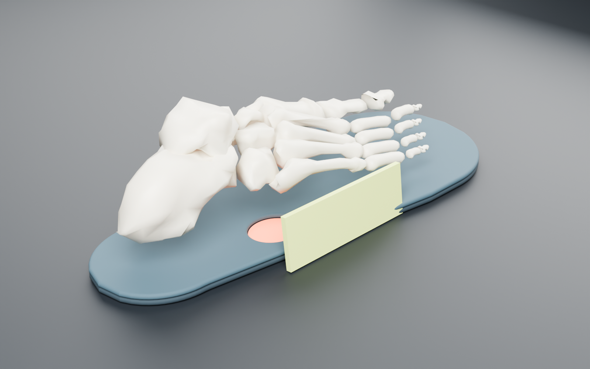

of knee-scooter users fell.
Walsh 2023Rehab AI is a platform that models the person with their device, then drafts a custom design a clinician approves.
- 1 · Model the bodyPhone scan becomes a body modelToday
- 2 · Capture movementPatient films walking with the deviceNext
- 3 · Simulate body + deviceNVIDIA Newton on a test piece todayNext
- 4 · AI design + checksNemotron drafts, code checks every numberToday
- 5 · Approve, make, re-scanClinician approves; cut-ready files; re-scan loopToday
of healed diabetic foot ulcers come back within a year.
Armstrong 2017Today: a forefoot offloading insole (relief under a metatarsal head), the kind of relief used in diabetic foot care. Diabetic-foot parameters and clinical tuning: next.Run log
Design studio · pick a patient, change the inputs
Live 3D · drag to rotate

Engineering workbench · one case, three sides
Evidence, sources and records
Why it matters · two scenarios
A · Ankle fracture, ~6 protected weeks on an iWALK, walking boot or knee scooter.
- 107–132ankle fractures per 100,000 people a year; women 75–84 peak at 248Court-Brown 1998; Swedish cohort
- 67%of walking-boot users developed new pain elsewhere (back, hip, knee)Ready 2018
- 37%of knee-scooter users fellWalsh 2023
- ~6 weeksof protected or non-weight-bearing walkingtypical pathway
B · Diabetic foot ulcer, incl. dialysis (motivation). Today's part is a forefoot offloading insole (relief under a metatarsal head), the kind of relief used in diabetic foot care; diabetic-foot-specific parameters and clinical tuning are next.
- £837–962ma year to NHS England for diabetic foot ulcers and amputationsKerr 2019
- 40% → 65%of healed ulcers recur within 1 year → 5 yearsArmstrong 2017
- 30.5%5-year mortality after a diabetic foot ulcerArmstrong 2020
- HR 7.6for foot ulceration on dialysis vs CKD stage 3Otte 2015
Fit is the lever. In patients who wore custom offloading footwear, recurrence was 25.7% vs 47.8% (Bus 2013; no significant difference overall).
Today vs next. Today: sample scan → Nemotron design → code checks → cut-ready files → clinician approval, and NVIDIA Newton on a nonhuman test piece. Next, not built yet: movement capture from patient video, and body + device load simulation.
Live Nemotron runs, 30 Oct 2026
- A · liner: 5 calls · 7,784 tokens · 5.1 s · compiled · claim audit pass
- B · insole: 4 calls · 4,173 tokens · 4.8 s
Data loop · hashed build records
What is real
- Design. NVIDIA Nemotron 3 Super (
nvidia/nemotron-3-super-120b-a12b) on Nebius Token Factory picks bounded tools. Deterministic code computes every number, and every number the AI states must appear in a tool result. - Liner ran live on Nemotron (v1, v2 re-scan, out-of-range refusal). Insole was compiled by code; the AI was not used. Test piece shows a recorded NVIDIA Newton (Warp) run from 14 Oct 2026; not re-run live.
- Check. Liner and insole use geometry checks, not physics. Newton has only run on the rigid test piece against a plane: no limb contact, no pressure map.
- Files. Liner and insole export 1:1 A4 cut patterns (SVG). Only the test piece exports an STL.
- Scans. All inputs are sample (synthetic) scans in
dist/samples/. No real person was scanned. - Approval. Only a human can approve; the AI can at most prepare a draft. Try the gate in the clinician view. The insole is compiled by
dist/compiler-core.jsviatools/run_pipeline_cases.mjs.